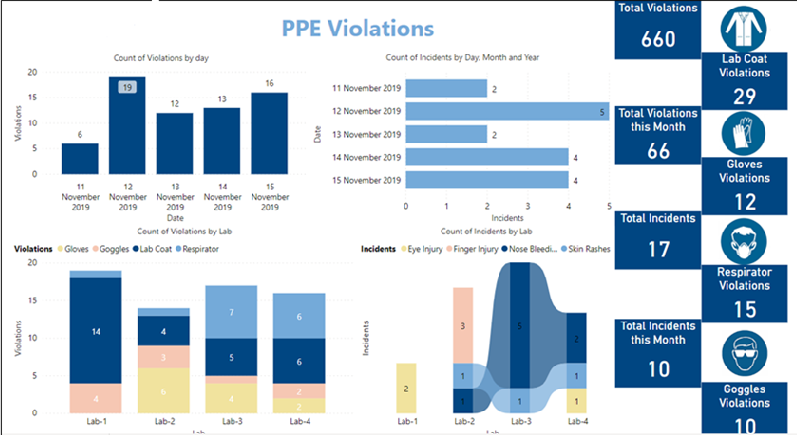
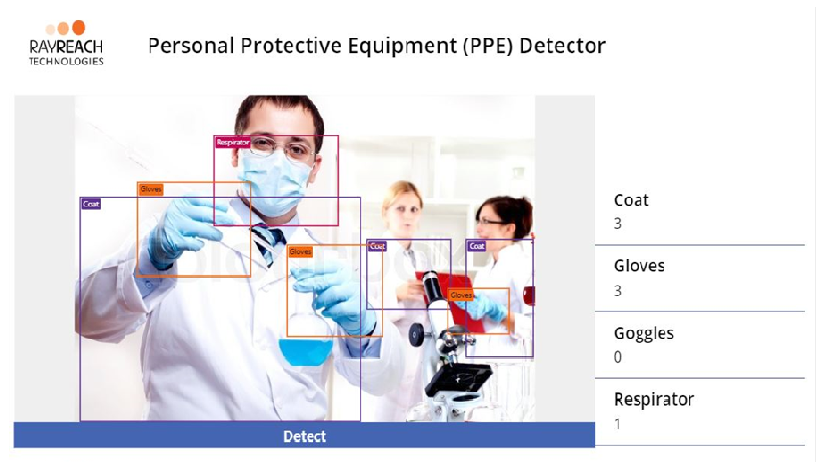
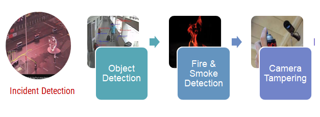

Facial Detection & Recognition System
Facial detection and recognition (FRS) technology powered by Cogvision’s AI-platform can identify one dataset against 100,000 faces per second and upto 30 fps from the database in real-time. This allows businesses to accelerate response times by quickly identifying people of interest and facilitate decision making!

Automated License Plate Recognition (ALPR)
Automated License Plate Recognition (LPR) Analytics – Ability to Accurately Capture Vehicle License Plates and process the same.
Following are the Functionalities of AI based Automated Number Plate Recognition (ANPR) System & Vehicle of Interest Search & Identification Module
- Accuracy
- Detection & Recognition
- Recognition at night
- Vehicle Detection by Color and logo / Color and number plate
- Alert Generation
- Vehicle Log Module
- General Specification
- Traffic Analytics
Personal Protection Equipment (PPE)
Personal protective equipment (PPE) analytics to minimize exposure to hazards that cause serious workplace injuries and illnesses, as well as for sports and other recreational activities
PPE is protective clothing, helmets, goggles, or other garments or equipment designed to protect the wearer's body from injury or infection.


People Utilization Time
Ability to monitor and report the amount of an employee's available time that's used for productive, billable work, expressed as a percentage. An employee's utilization rate is a critical metric for organizations to track.
Example - We can trace the status of Teller Availability/Unavailability – In a Teller counter person has to be present to minimize wait time for customer and ensuring the smooth handling of cash/cheque transaction Camera need to be position to optimize the number of counter and data clarity of the feed.
Advantages: Occupancy engagement of teller counter person with the reference of customer standing to do the transaction can be trace to optimize efficiency.
Perimeter Intrusion Detection
Recognizing movement of objects or people in restricted zones
The system is able to detect an act of intrusion. Intrusion herein refers to the instance of an individual crossing a pre-defined virtual fence defined by the user
Social Distance Management
A Vision-based Social Distancing and Critical Density Detection System for the new normal way of living! Through Cogvision analytics we can help measure social density in your region of interest (ROI) and by modulating inflow can provide information on social distancing violation occurring events.
Counting & Crowd Management
Analyses crowd density, motion, behavior in a user defined zone based on age and gender.
Understanding the crowd movement and management for the security and facilities management agencies!
Raises an alert if the crowd density within a camera view is above a certain threshold
Behavioral Analysis
We can capture staff emotion or do behavioral analysis in the region of interest area.
Example: Teller Counter, Branch Manager or any specific desk Behavior possible to capture: anger, contempt, disgust, fear, joy, sadness and surprise. Behavior/Code of conduct is very important at workplace to represent the efficiency and smooth working process.
Thermal Scanning
We have the capability of doing analytics on the military grade EO/IR cameras feature detection ranges for humans up to 2-5 km and vehicles at 5-10 km range. Depending on pan/tilt and gyro system selected our vision analytics can be used on moving vehicles and ships to maintain a steady image on target and come as standard with incredible build quality and cutting edge technology to increase range detection and reduce outside influences such as fog/haze.
Emergency / Fire / Smoke & Safety Alert
